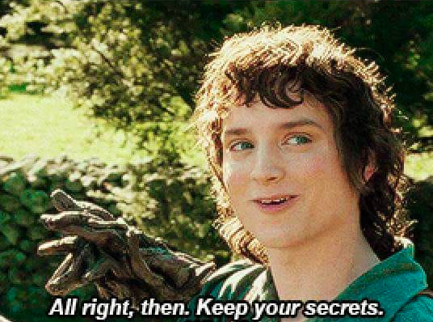

Will Zywiec, PhD
This website is a collection of personal projects and memes, extensions of graduate research I did at GWU and JHU.
The views and opinions expressed on this site are my own and do not necessarily reflect the official policy or position of my employer, any government agency, or the U.S. Government.

Updates
"Now and then we had a hope that if we lived and were good, God would permit us to be pirates." -Mark Twain
November 23, 2025
With some help from Claude, I built a novel alpha eigenvalue solver, gravitational acceleration, and solid of revolution geometry in OpenMC in about 5 days. Ultracold neutron experiments are next!
November 13, 2025
The production version of AlphaFit is out. It's compiled in C and includes uncertainty analysis, LaTeX documentation, hotkeys, and a couple Easter eggs. It can also run streaming neutron and gamma ray data, which means no more guess-and-check to figure out how long a measurement needs to run before it converges.
October 18, 2025
AlphaFit now uses a novel Y3/Y2 ratio method for assessing multiplication, combined with 2-step Hage-Cifarelli and spectral methods to cross-validate multiplication, Beff, detector efficiency, and neutron lifetime(s). Lag-1 autocovariance showed some initial promise but didn't hold up across a few test cases, so I pulled it.
Most of the past 3 months has been spent stress-testing AlphaFit. The dotted purple line on the Doubles (Y2) plot is the Hubbard fit, one of the many point kinetics methods that didn't make the cut. I like stress-testing because it shows how fragile or resilient these methods actually are.
July 3, 2025
AlphaFit v32 is now deployed with third-order neutron correlation and an amplitude-based method for estimating He-3 detector efficiency. Still chipping away at lag-1 autocovariance.
February 5, 2025
Making progress on third-order neutron correlation and lag-1 autocovariance methods. Took a break to refactor some dissertation code using Claude and ChatGPT—migrated it from R+Keras/TensorFlow to Python+Torch.
September 11, 2024
Developing a better third-order neutron correlation method using open-source datasets from ICSBEP and IRPhE.
May 19, 2024
Fixing less than 20 lines of code that take 24+ hours to run.
August 11, 2023
At Preservation Pub reading an amazing dissertation beneath a tree made of lights. #toowildfriday ☢️🤖
June 15, 2023
Whenever I run a physics code that crashes with nondescript error messages:

April 15, 2023
Started modeling polymer mixtures to study and optimize their radiation transport properties. Most of the test samples I make look like tiny pink cupcakes.
October 24, 2021
Fixed minor geometry and density logic errors—success rate is now 100%. There are still a few cross section calls and tallies I need to adjust to make the MCNP simulations more accurate, but everything works. Reconfigured the script to check and plot errors to verify successful completion of all 10,000 simulations.
October 24, 2021
Fixed a material error, which eliminated all but 24 failures. Minimum success rate is now 99.78%.
October 24, 2021
Fixed a density error, which eliminated the rest of the fatal errors. Minimum success rate is now 96.87%.
October 24, 2021
Fixed a source particle distribution error, which reduced the fatal errors and eliminated all wrong length failures. Minimum success rate is now 95.2%.
October 24, 2021
The 10 particles got lost failures are gone. Minimum success rate is now 86.88%.
October 24, 2021
Indexed all the 10 particles got lost failures, plotted a few, and found clear geometry errors. Refactored a couple lines of code to fix the affected input decks. Now rerunning 776 MCNP simulations.
October 24, 2021
Preliminary results:
Looked at the output and found that bad trouble and impossible were redundant failures, so I ignored impossible. This bumped the minimum success rate to 79.33%, which isn't much of an improvement.
October 23, 2021
Took a brief pause after 2,259 MCNP simulations and plotted the results:
Overall, this represents a minimum success rate of 76.18%, which isn't terrible. Haven't checked for failure redundancy, but I don't really care at this point because the goal is 100%.
October 23, 2021
I'm building a few different MCNP simulation databases, and the input code I inherited is messy and fails a lot, so I'll be posting these failures as I iteratively fix them. Keywords I'm searching for: bad trouble, fatal error, impossible, wrong length, and 10 particles got lost, with maybe a few more to come.
The rules are simple: if there are one or more unique keywords in an output file, all will be counted; redundant keywords in the same output file will be ignored. As of right now, 492 out of 10,000 simulations are finished. 🎃
April 17, 2021
This k-effective contour plot was made using a deep neural network metamodel of MCNP6.2 simulations. It represents 0-4 kg of alpha-phase plutonium, homogeneously dispersed in a sphere of water with one inch of water reflection.
The results are very accurate (MAE = 2.5e-04) and outperform state-of-the-art spline fitting techniques by more than an order of magnitude. This graph is impossible to appreciate because it's more accurate than the width of a pixel on whatever monitor you're using.
April 16, 2021
Some graphs from assignments I completed as a graduate student at JHU. Made with R and ggplot2, formatted to match the style in Getting Started with Minitab, a piece of software I've never used.
These next graphs are from an airport TSA body scanner project, where I used R and Arena to simulate passenger queues, alarm rates, time delays, and wait times to determine how many scanners were needed to keep under 1% of passengers waiting 30+ minutes. The first two sets look spotty because they were based on only a few simulations. All of this was tested using real data from Oakland International Airport.
Even after switching luggage scanners in Terminal 2, OAK's queue times remain the lowest in the nation for an airport of its size, geographic location, population density, and throughput.
May 5, 2013
Have you ever operated a nuclear reactor? Yes? Well, have you ever achieved 500% reactor power by ejecting a rod from a four-loop Westinghouse PWR modified to burn MOX fuel?
Jan 10, 2011
"All the speed he took, all the turns he'd taken and the corners he'd cut in Night City, and still he'd see the matrix in his sleep, bright lattices of logic unfolding across that colorless void." -William Gibson